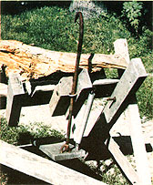
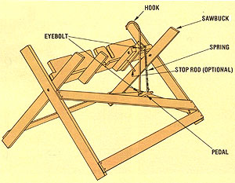

This easy-to-make log skewer can take some of the risk out of bucking your winter firewood.
Heating with wood has become quite popular . . . because, in many cases, the renewable energy source provides an economical alternative to more costly fuels. Unfortunately, though, the revival of the woodstove has also resulted in a dramatic rise in the number of chain-saw injuries . . . caused by the improper use of this tool. And it's likely that thousands of chain saws will go into the hands of novice woodcutters this year, and that many of those machines will be accompanied by little or no effective safety education.
When I started garnering my own fuel several years ago, and first pulled the starter to set my newly purchased chain of slashing steel in motion, I quickly realized that I was handling a very dangerous tool. And so it was with a great deal of interest that I listened to my friend Jeff Goris, an industrial arts teacher, describe a safety device that he'd constructed to aid him in his sawing chores. This homemade contraption is a hold-'em-down, keep-your-balance, spring-loaded sawbuck attachment ... and it works.
"The fact is," Goris explained to me, "that when you maintain your own balance and immobilize the object you're cutting, you minimize the chances of a mishap. But when you're bending - and thus off your center of gravity - or cutting up an oddly shaped round, you put yourself in danger." Mr. Goris eliminates the risk of hand-juggling unstable logs by using a foot-operated hold-down hook that secures the billet while he's sawing it. A little foot pressure on the pedal (shown in the picture) brings the hook down into the wood and clamps it in place. At present, the design accommodates logs up to only 12" in diameter, but it could easily be modified to manage larger sections if necessary.
Jeff fashioned his hook from a scrap of 1/2" steel rod. The innovative tinkerer believes a lighter bar might work, too . . . but he prefers the "authority" of the heavier metal. He offers a few other tips as well: "Make certain the point of the hook follows an arc that meets with the bottom of the sawbuck's 'V' when the pedal is pressed. You may find that you'll need to experiment a bit in order to get the guiding eyebolt in a position that will permit the rod to move up and down without binding."
The simple arrangement works remarkably well. I tried it a number of times, and with each run it smoothly steadied the billets . . . and was especially helpful on knotty logs. In fact, this uncomplicated tool is the best woodcutting "insurance" that I've yet seen!
|
 |
 |
|